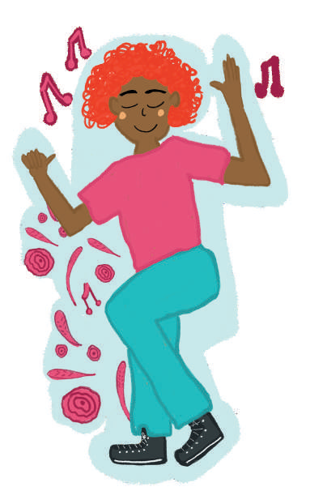
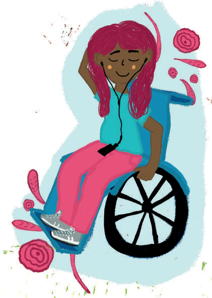

Manual de autocuidado
Finalmente...
¡Ser creativo/a y disfrutar!
Disfruta compartir con tus personas significativas, apoya la realización de actividades nuevas en las que todos y todas se puedan sentir cómodos/as.
Puedes tomar como referencia algunas de estas actividades:
- Planear una fiesta
- Practicar un deporte
- Salir de compras
- Ir al cine
- Cocinar juntos
- Salir a la playa
- Salir a un restaurante o karaoke
- Viajar a un nuevo lugar o país
- Escuchar música
- Visitar un museo
- Asistir a un concierto
- Asistir a eventos significativos del otro
- Salir a caminar/correr
- Crear espacios de relajación juntos
- Jugar juegos de mesa
- Aprender un idioma juntos
- Discutir un libro
- Aprender a tocar un instrumento
- Asistir al gimnasio

